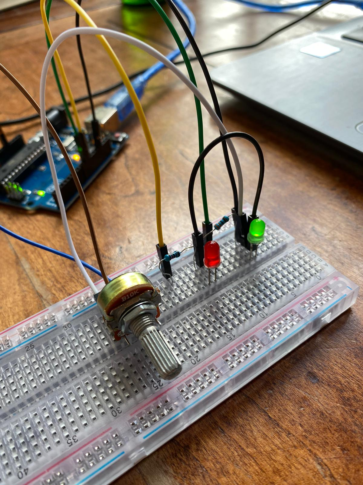
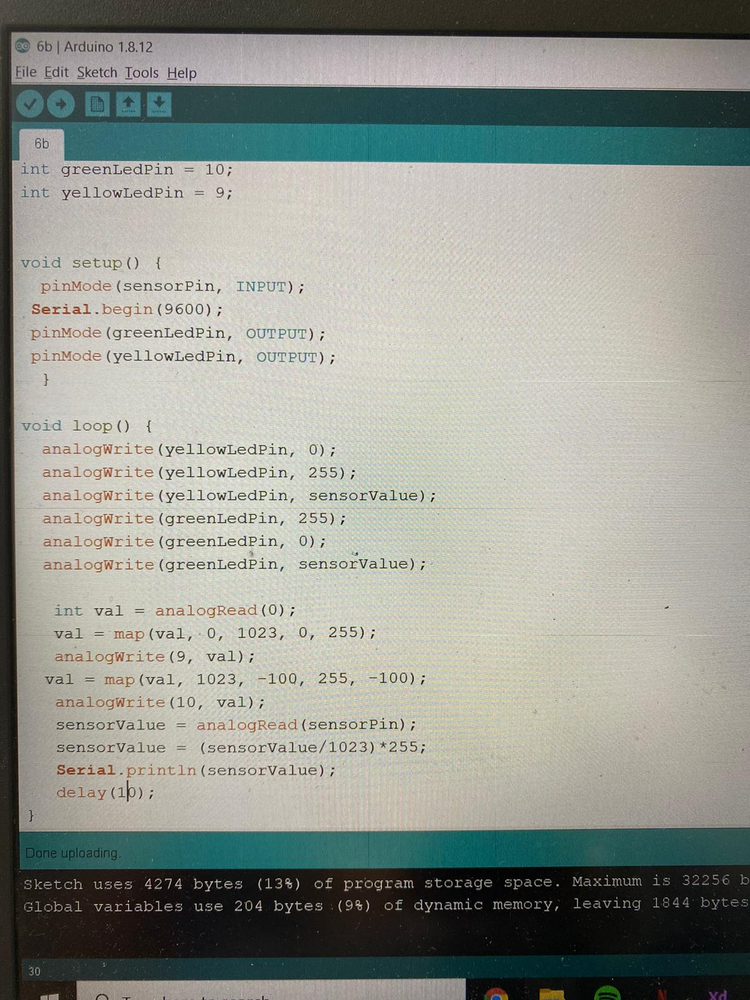

Voor deze opdracht heb ik een pot-meter toegevoegd aan het circuit. Hiermee kan je bepaalde waarden veranderen. De opdracht was om de code zo te schrijven dat wanneer er aan de pot-meter wordt gedraaid de ene LED langzaam uitgaat, terwijl de andere LED langzaam aan gaat. De werking is te zien in de video hieronder.
 